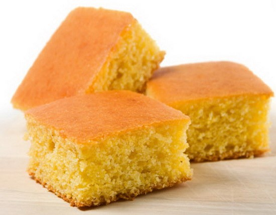

Proja

Sta je proja?
Proja je jednostavno jelo, a neki je smatraju "sirotinjskim specijalitetom" jer se pravi od jeftinih sastojaka i često se jela kao zamena za hleb. Tradicionalno se služi kao prilog uz razna jela ili samostalno jelo.
Sastojci
- 12 supenih kasika projinog (kukuruznog) brasna
- 4 supene kasike belog (psenicnog) brasna
- 3 jajeta
- 1 casa (2dl) jogurta
- 1 casa (2dl) kisele vode
- 250gr belog sira
- 1dl ulja
- 1dl ulja
Priprema
- Prvo, i najvaznije, je da pravite proju nekome koga volite, onda ima sasvim poseban ukus
- Sve gore napisane sastojke pomesajte u nekoj velikoj posudi, ali sir nemojte previse usitniti-lepse je kad ostanu veci komadi.
- Rastopljenim margarinom podmazati pleh (ili kalupe za proje i mafine) i izruciti testo.
- Peci 30min u prethodno zagrejanoj pecnici, prvo 10min na 200 C a onda jos 20min na 180 C.
Home